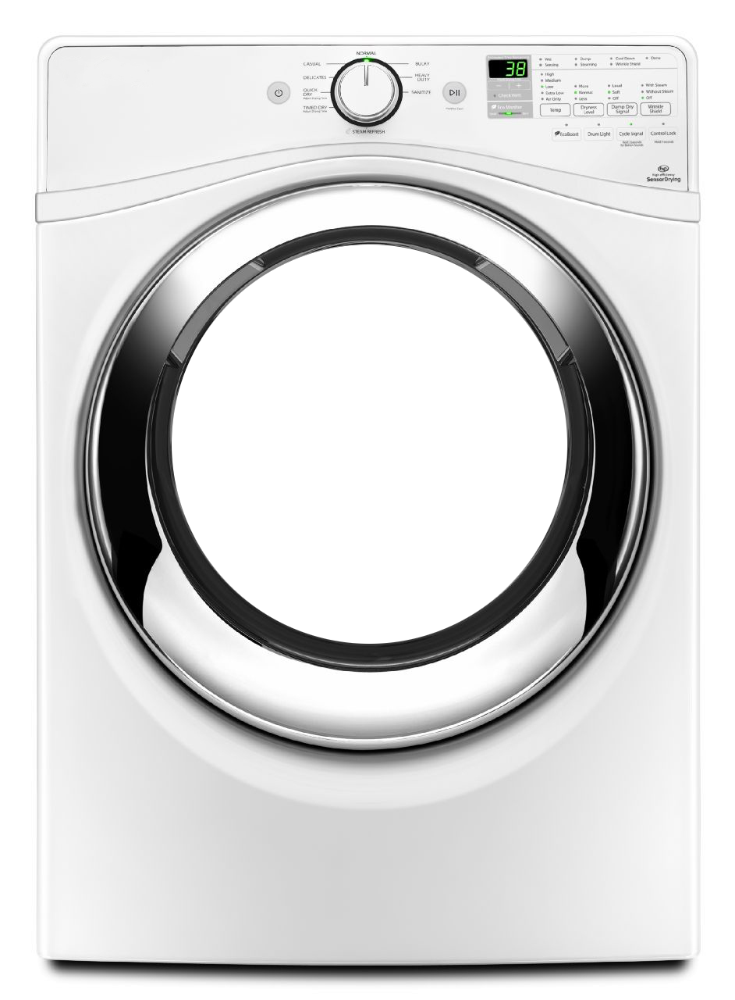

<!DOCTYPE html>
<html lang="en">

<head>
    <meta charset="UTF-8">
    <meta name="viewport" content="width=device-width, initial-scale=1.0">
    <meta name="description" content="Laundry is Art">
    <meta property="og:title" content="Wash Up">
    <meta property="og:description" content="Laundry is Art">
    <meta property="og:image" content="https://rau.lol/laundry/laundry5.png">
    <title>Laundry is Art</title>
    <style>
        body,
        html {
            margin: 0;
            padding: 0;
            overflow: hidden;
        }

        canvas {
            display: block;
        }
    </style>
    <script src="https://data.rau.dev/code/noise.js"></script>
</head>

<body style="display:flex; justify-content: center;align-items: center;">
    <!--  -->
    <!-- <div
        style="width: 100vw;height: 100vh;background: radial-gradient(circle, transparent 30%, rgb(255, 255, 255) 30%);position: absolute;">
    </div> -->
    <input style="position:absolute" type="range" min="0" max="100" value="98" id="damper">
    <canvas id="artCanvas"></canvas>
    <script>

        const images = [];
        const image_names = ['washa.png', 'washb.png', 'wash2b.png', 'wash2a.png'];
        const bgs = ['laundro4.png', 'laundro5.png', 'laundro6.png', 'laundro7.png', 'laundro8.png'];
        const prio_bgs = ['laundro7.png', 'laundro4.png', 'laundro5.png'];
        const dryer = document.querySelector('img');
        const circlebg = document.querySelector('div');
        let spinning = true;

        for (let i = 0; i < image_names.length; i++) {
            const img = new Image();
            img.src = image_names[i];
            images.push(img);
        }

        document.body.style.backgroundImage = `url(${prio_bgs[Math.floor(Math.random() * prio_bgs.length)]})`;
        console.log(document.body.style.backgroundImage);
        document.body.style.backgroundSize = 'auto 100%';
        document.body.style.backgroundPosition = 'center';
        document.body.style.backgroundRepeat = 'repeat';
        
        const canvas = document.getElementById('artCanvas');
        const ctx = canvas.getContext('2d');
        // Set canvas size based on images[0] aspect ratio
        const imgRatio = images[0].naturalWidth / images[0].naturalHeight;
        canvas.width = window.innerWidth;
        canvas.height = window.innerWidth / imgRatio;
        if (canvas.height > window.innerHeight) {
            canvas.height = window.innerHeight;
            canvas.width = window.innerHeight * imgRatio;
        }
        

        let mainCircle = {};
        const Nodes = [];
        const g = 9.8; // Acceleration due to gravity (m/s^2) on Earth's surface

        // Global damping factor to reduce the energy of the nodes after collision
        let globalDampingFactor = 0.8;
        let delay = globalDampingFactor * 100

        function drawMainCircle() {
            // Ellipse with context save and rotate every tick based on mainCircle.rotation
            // ctx.save();
            // ctx.translate(mainCircle.x, mainCircle.y);
            // ctx.rotate(mainCircle.rotation * 102);
            // ctx.beginPath();
            // ctx.setLineDash([10, 15]);
            // ctx.ellipse(mainCircle.x, mainCircle.y, mainCircle.width, mainCircle.height, 0, 0, Math.PI * 2);
            // ctx.strokeStyle = 'black';
            // ctx.stroke();
            // ctx.setLineDash([]); // Resetting the dash to solid for other drawings
            // ctx.restore();

            mainCircle.rotation += 0.001;
        }

        function addNode() {
            const angle = Math.random() * Math.PI * 2;
            const radius = mainCircle.radius / 10;
            const x = mainCircle.x + radius;
            const y = mainCircle.y + radius;

            const r = Math.floor(Math.random() * 256);
            const g = Math.floor(Math.random() * 256);
            const b = Math.floor(Math.random() * 256);
            let rimage = images[Math.floor(Math.random() * images.length)];

            const scale = mainCircle.radius / canvas.width;
            const w = mainCircle.height * scale/1.4*.75
            const h = mainCircle.width * scale/.5*.75;
            Nodes.push({
                x: x,
                y: y,
                z: 0,
                w: w, 
                h: h,
                dx: 0,
                dy: g,
                dz: 0,
                entropyx: noise.simplex2(Math.random(), Math.random()),
                entropyy: noise.simplex2(Math.random(), Math.random()),
                color: `rgb(${r}, ${g}, ${b})`,
                radius: radius,
                zradius: radius,
                image: rimage,
                rotation: (Math.random() - 0.5) * Math.PI * 2,
                shape: 'blob',
                points: Array.from({ length: 8 }, () => {
                    const angle = Math.random() * 2 * Math.PI;
                    const noiseX = noise.simplex2(angle, 0) * w;
                    const noiseY = noise.simplex2(0, angle) * h;
                    return {
                        offsetX: Math.cos(angle) * radius + noiseX,
                        offsetY: Math.sin(angle) * radius + noiseY
                    };
                }),
            });

        }

        function drawNode(node) {
            const darkerFactor = 1 - (node.z / mainCircle.radius);
            const color = node.color.match(/\d+/g).map(n => Math.floor(n / darkerFactor));
            ctx.fillStyle = `rgb(${color[0]}, ${color[1]}, ${color[2]})`;
            // ctx.fillRect(node.x, node.y, node.w, node.h);
            // Adjusted drawing of the node polygon
            ctx.beginPath();
            ctx.moveTo(node.points[0].offsetX + node.x, node.points[0].offsetY + node.y);
            for (let i = 1; i < node.points.length; i++) {
                const nextPointX = node.points[i].offsetX + node.x;
                const nextPointY = node.points[i].offsetY + node.y;
                const currentPointX = node.points[i - 1].offsetX + node.x;
                const currentPointY = node.points[i - 1].offsetY + node.y;
                const midPointX = (currentPointX + nextPointX) / 2;
                const midPointY = (currentPointY + nextPointY) / 2;
                ctx.quadraticCurveTo(currentPointX, currentPointY, midPointX, midPointY);
            }
            // Close the path with a curve to the first point
            const firstPointX = node.points[0].offsetX + node.x;
            const firstPointY = node.points[0].offsetY + node.y;
            const lastPointX = node.points[node.points.length - 1].offsetX + node.x;
            const lastPointY = node.points[node.points.length - 1].offsetY + node.y;
            const midPointX = (lastPointX + firstPointX) / 2;
            const midPointY = (lastPointY + firstPointY) / 2;
            ctx.quadraticCurveTo(lastPointX, lastPointY, midPointX, midPointY);
            ctx.quadraticCurveTo(firstPointX, firstPointY, firstPointX, firstPointY);
            ctx.closePath();
            ctx.stroke();
            ctx.fill();
            // ctx.save();
            // ctx.translate(node.x + node.w / 2, node.y + node.h / 2);
            // ctx.rotate(node.rotation);
            // // Apply skew based on noise
            // ctx.drawImage(node.image, -node.w / 2, -node.h / 2, node.w, node.h);
            // ctx.restore();
        }

        function nodeCollision(node, x, y, z, dx, dy) {
            // Check for collision with other nodes
            Nodes.forEach(otherNode => {
                if (otherNode !== node) {
                    const distNodes = Math.sqrt((otherNode.x - x) ** 2 + (otherNode.y - y) ** 2 + (otherNode.z - z) ** 2);
                    const collisionDistance = otherNode.zradius + node.zradius;
                    if (distNodes < collisionDistance) {
                        // Simple collision response that swaps velocities
                        const tempDx = node.dx;
                        const tempDy = node.dy;
                        const tempDz = node.dz;
                        node.dx = otherNode.dx;
                        node.dy = otherNode.dy;
                        node.dz = otherNode.dz;
                        otherNode.dx = tempDx;
                        otherNode.dy = tempDy;
                        otherNode.dz = tempDz;
                    }
                }
            });
        }


        function updateNode(node, time) {
            // Apply constant gravity to the vertical velocity and add a bit of entropy using noise
            node.dy += g; // + noise.simplex2(node.x, time) * 0.1; // Entropy factor for dy using simplex noise
            // node.dx += noise.simplex2(node.y, time) * 0.1; // Entropy factor for dx using simplex noise
            // Introduce dz to represent movement in the z-axis
            // node.dz += (Math.random() - 0.5) * 2; // Random movement in the z-axis

            if(!spinning){
                node.dx = 0;
                node.dy = g;
                node.dz = 0;
            }
            
            let dx = node.dx;
            let dy = node.dy;
            let dz = node.dz;
            let x = node.x + dx;
            let y = node.y + dy;
            let z = node.z + dz;

            // nodeCollision(node, x, y, z, dx, dy);

            // Check if node is outside of an offset circle in the xy-plane and within the z boundary
            let offset = node.radius; // Offset by the node's radius
            let distance = Math.sqrt((x - mainCircle.x) ** 2 + (y - mainCircle.y) ** 2);
            let zBoundary = mainCircle.radius; // Assuming zBoundary is the same as the radius for simplicity
            if (distance > mainCircle.radius - offset || Math.abs(z) > zBoundary) {
                // Reflect node in the xy-plane
                let normal = { x: mainCircle.x - x, y: mainCircle.y - y };
                let magnitude = Math.sqrt(normal.x ** 2 + normal.y ** 2);
                normal.x /= magnitude;
                normal.y /= magnitude;

                let dot = dx * normal.x + dy * normal.y;
                // Introduce a damping factor to reduce the energy of the node after collision
                const dampingFactor = globalDampingFactor;
                node.dx = (dx - 2 * dot * normal.x) * dampingFactor;
                node.dy = (dy - 2 * dot * normal.y) * dampingFactor;

                // Reflect node in the z-axis
                node.dz = -node.dz * dampingFactor;

                // Apply a vector in the direction the mainCircle is rotating to the node when in contact
                // Only apply if the node is in the lower half of the mainCircle
                if (spinning && y >= mainCircle.y) {
                    const rotationMagnitude = 100 * mainCircle.rotation; // Adjust this value as needed for the desired effect
                    const rotationDirection = mainCircle.rotation >= 0 ? 1 : -1; // Determine the direction of rotation
                    node.dx += rotationDirection * normal.y * rotationMagnitude;
                    node.dy -= rotationDirection * normal.x * rotationMagnitude;
                    // Adjust node.rotation based on the mainCircle's rotation
                    node.rotation += mainCircle.rotation * (0.5 + noise.simplex2(node.x, node.y) * 0.5); // Made more abrupt and added noise
                }

                // dampen dx, dy, and dz
                node.dx *= 0.99999;
                node.dy *= 0.999;
                node.dz *= 0.699;

                // noise variation for d
                node.dx += noise.simplex2(node.x, node.y) * 0.1;
                node.dy += noise.simplex2(node.y, node.x) * 0.1;
                node.dz += noise.simplex2(node.x, node.y) * 0.1;

            } else {
                // Update the node's position with the new velocity including entropy
                node.x = x;
                node.y = y;
                node.z = z;
            }

            // Update the node's z-radius based on its z position to simulate perspective
            node.zradius = node.radius * (1 - (z / zBoundary));
        }

        function generateArt() {
            Nodes.length = 0;

            mainCircle = {
                x: canvas.width * 0.5,
                y: canvas.height * 0.3333,
                width: canvas.width*.63/2,
                height: images[0].height / 3.333,
                radius: canvas.height * 0.5 * 0.5,
                rotation: 1,
            };

            const numberOfNodes = 15;
            for (let i = 0; i < numberOfNodes; i++) {
                addNode();
            }
        }

        function drawMachine() {
            ctx.drawImage(images[0], 0, 0, canvas.width, canvas.height);
            // ctx.drawImage(images[0], mainCircle.x - mainCircle.width / 2, mainCircle.y - mainCircle.height / 2, mainCircle.width, mainCircle.height);
        }

        function draw() {
            ctx.clearRect(0, 0, canvas.width, canvas.height);
            // Draw the main circle
            drawMainCircle();

            const machineImage = images[3];
            const pivotX = canvas.width / 2;
            const pivotY = canvas.height / 3;
            ctx.save(); // Save the current state of the canvas
            ctx.translate(pivotX, pivotY); // Move the canvas origin to the pivot point
            // Rotate around the pivot point
            ctx.rotate(mainCircle.rotation*100*spinning); // Assuming mainCircle.rotation holds the rotation angle in radians
            ctx.drawImage(machineImage, -pivotX, -pivotY, canvas.width, canvas.height); // Draw the image back and up
            ctx.restore(); // Restore the canvas to its original state
            ctx.fillStyle = 'black'; // Set to black
            // Nodes that represent the clothes
            // Sort the nodes based on their z position to draw the ones further away first
            Nodes.sort((a, b) => a.z - b.z);
            Nodes.forEach(node => {
                updateNode(node);
                drawNode(node);
            });
            
            // Draw the machine
            drawMachine();


            // debug timerout
            setTimeout(() => {
                requestAnimationFrame(draw);
            }, delay);

        }

        window.onload = () => {
            generateArt();
            draw();

            console.log('loaded');
            // trigger resize
            window.dispatchEvent(new Event('resize'));
        }

        // Function to resize canvas on window resize, maintaining the aspect ratio of images[0]
        window.addEventListener('resize', function () {
            const imgRatio = images[0].naturalWidth / images[0].naturalHeight;
            canvas.width = window.innerWidth;
            canvas.height = window.innerWidth / imgRatio;
            if (canvas.height > window.innerHeight) {
                canvas.height = window.innerHeight;
                canvas.width = window.innerHeight * imgRatio;
            }
            generateArt();
        });

        let showclicksquare = false;
        window.addEventListener('click', function (e) {
            const rect = canvas.getBoundingClientRect();
            const scaleX = canvas.width / rect.width;
            const scaleY = canvas.height / rect.height;
            const x = (e.clientX - rect.left) * scaleX;
            const y = (e.clientY - rect.top) * scaleY;
            const clickRectX = (canvas.width / 2) - (images[3].width / 40);
            const clickRectY = 0;
            const clickRectWidth = images[3].width / 20;
            const clickRectHeight = images[3].height / 20;

            // Check if the click is within the fillRect region
            if (x >= clickRectX && x <= clickRectX + clickRectWidth && y >= clickRectY && y <= clickRectY + clickRectHeight) {
                ctx.fillStyle = 'black';
                ctx.fillRect(clickRectX, clickRectY, clickRectWidth, clickRectHeight);
                spinning = !spinning;

                if(!spinning){
                    mainCircle.rotation = 0;
                }
                else{
                    mainCircle.rotation = 1;
                }
            } else {
            }
            showclicksquare = !showclicksquare;
        });

        // Damper
        const damper = document.getElementById('damper');
        damper.addEventListener('input', function () {
            // globalDampingFactor = damper.value / 100;
            delay = damper.value;
        });


    </script>
</body>

</html>